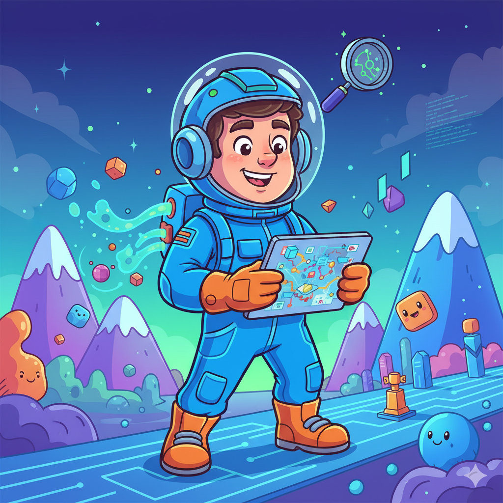
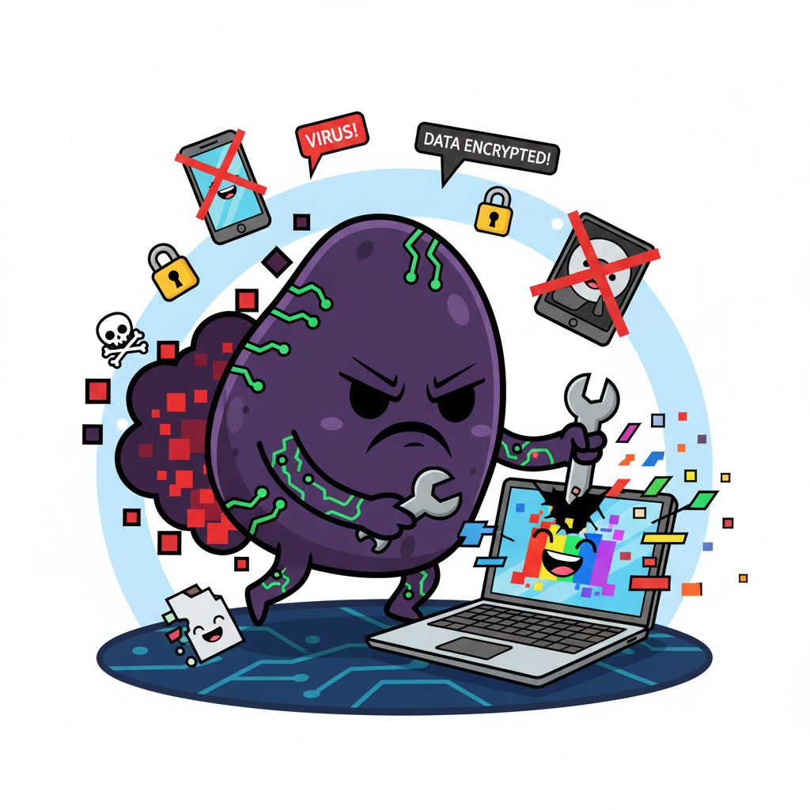
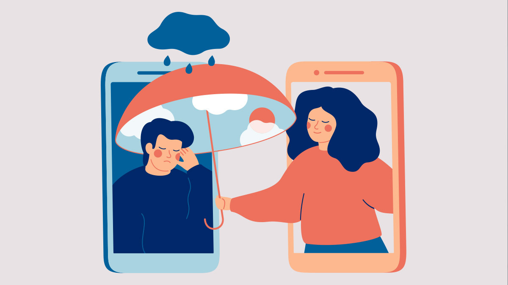
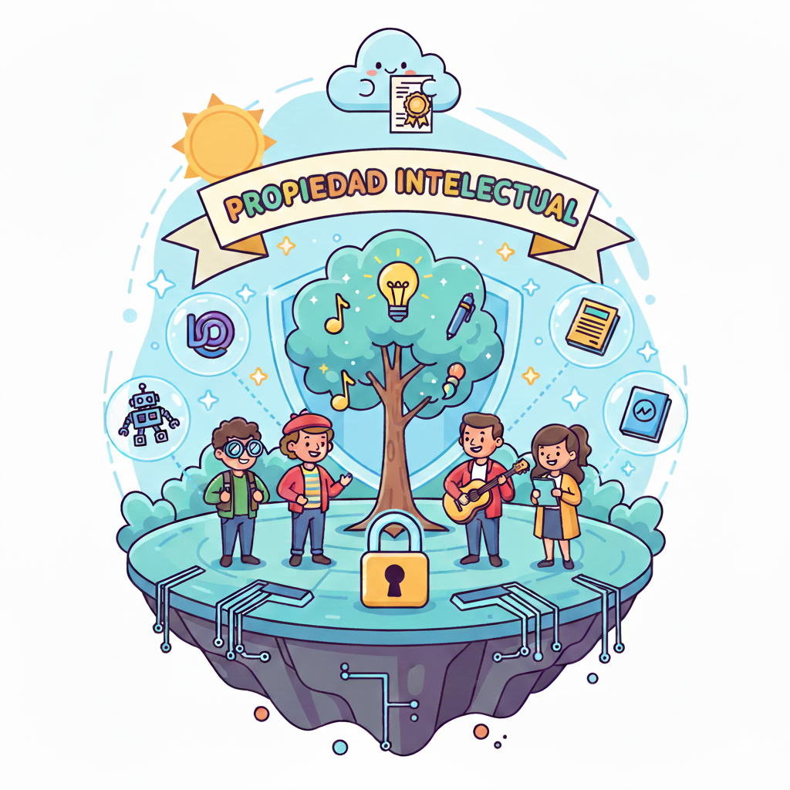

¡Prepárate para ser un Ciber-Explorador!
El mundo digital es increíble: puedes aprender, jugar, comunicarte y explorar. Pero, como cualquier lugar, tiene sus riesgos. En esta unidad, te convertirás en un Explorador Digital y aprenderás a navegar por Internet de forma segura y responsable.
Descubriremos cómo proteger tu información, identificar los peligros y respetar los derechos de los demás en línea. ¡Tu misión es dominar la ciberseguridad para disfrutar al máximo de la red!

- - ¡Tu aventura digital comienza aquí!
1. Seguridad Activa y Pasiva: Tus Escudos Digitales
Para estar seguro en Internet, necesitamos dos tipos de defensa:
- Seguridad Activa: Son las medidas que tomas antes de que ocurra un problema para prevenirlo. Es como poner una cerradura en tu puerta.
- Ejemplos: Usar contraseñas fuertes, tener un antivirus, actualizar tus programas.
- Seguridad Pasiva: Son las medidas que tomas después de que ha ocurrido un problema para minimizar el daño o recuperarte. Es como tener un seguro de hogar.
- Ejemplos: Hacer copias de seguridad de tus archivos, tener un plan para recuperar tu cuenta si te la roban.
¡Ambas son importantes para protegerte en el mundo digital!
- - Tus defensas en línea.
¡Actividad Práctica! Piensa en 2 ejemplos de seguridad activa y 2 de seguridad pasiva que uses o que podrías usar en tu vida digital.
2. Tu Exposición en Internet: ¡Lo que Compartes Importa!
Todo lo que publicas o compartes en Internet (fotos, comentarios, vídeos, información personal) deja una huella digital. Esta huella puede ser vista por muchas personas y es difícil de borrar.
Consejos para gestionar tu exposición:
- Piensa antes de publicar: ¿Es algo que quieres que todo el mundo vea, incluso en el futuro?
- Configura tu privacidad: En redes sociales y otras plataformas, ajusta quién puede ver tu información.
- No compartas datos personales sensibles: Tu dirección, número de teléfono, o datos bancarios nunca deben compartirse públicamente.
- Sé amable y respetuoso: Lo que dices en línea afecta a los demás y a tu propia reputación.
- - Tu huella digital es para siempre.
¡Actividad Práctica! Imagina que vas a publicar una foto en una red social. Antes de hacerlo, haz una lista de 3 preguntas que te harías para asegurarte de que es seguro y apropiado publicarla.
3. Peligros en Internet: ¡Mantente Alerta!
Internet es un lugar genial, pero también tiene sus peligros. Es importante conocerlos para poder evitarlos:
- Ciberacoso (Cyberbullying): Molestar o acosar a alguien a través de medios digitales.
- Phishing: Intentos de engañarte para que reveles información personal (contraseñas, datos bancarios) haciéndose pasar por alguien de confianza (ej. un banco, una red social).
- Malware (Virus): Programas maliciosos que pueden dañar tu ordenador o robar tu información.
- Contenido Inapropiado: Imágenes, vídeos o textos que no son adecuados para tu edad.
- Contactos Peligrosos: Personas que no conoces y que pueden intentar engañarte o hacerte daño.
Regla de oro: Si algo te parece extraño, demasiado bueno para ser verdad, o te hace sentir incómodo, ¡pide ayuda a un adulto de confianza!

- - ¡Identifica y evita los riesgos!
¡Actividad Práctica! Juega a "La Torre del Tesoro" de Interland para aprender a proteger tu información: Jugar a La Torre del Tesoro
4. Interacción en Plataformas Virtuales: ¡Conéctate con Responsabilidad!
Las plataformas virtuales (como redes sociales, foros de videojuegos, plataformas educativas) son lugares donde interactuamos con otras personas. Es fundamental hacerlo con respeto y seguridad.
Reglas de oro para interactuar:
- Sé respetuoso: Trata a los demás como te gustaría que te trataran.
- No compartas tu contraseña: Nunca se la des a nadie, ni siquiera a tus amigos.
- Reporta lo inapropiado: Si ves algo que no está bien, repórtalo a la plataforma o a un adulto.
- Verifica la fuente: No todo lo que lees en línea es verdad. Investiga antes de creer o compartir.
- Cuida tu identidad digital: La forma en que te presentas en línea es importante.

- - Conecta con respeto y seguridad.
¡Actividad Práctica! Juega a "El Río de la Realidad" de Interland para aprender a distinguir lo real de lo falso en Internet: Jugar a El Río de la Realidad
5. Propiedad Intelectual: ¡Respeta las Creaciones de Otros!
Así como tú tienes derecho a tus propias ideas y creaciones, las personas que crean música, vídeos, programas, juegos o textos también tienen derechos sobre ellos. Esto se llama Propiedad Intelectual.
¿Qué significa esto para ti?
- No copies sin permiso: Si quieres usar una imagen, una canción o un texto de Internet, asegúrate de tener permiso o de que sea de uso libre.
- Cita tus fuentes: Si usas información de otra persona, menciona de dónde la sacaste.
- Valora el trabajo ajeno: Crear contenido lleva tiempo y esfuerzo.
Respetar la propiedad intelectual es ser un ciudadano digital responsable.

- - Respeta las creaciones de los demás.
¡Actividad Práctica! Juega a "El Jardín de la Bondad" de Interland para aprender a ser un buen ciudadano digital y respetar a los demás: Jugar a El Jardín de la Bondad
Actividades de Evaluación: ¡Demuestra tus Habilidades de Ciberseguridad!
Es hora de poner a prueba tus conocimientos y habilidades como Explorador Digital.
-
Actividad 1: "Mi Guía de Contraseñas Seguras"
Crea un póster digital o un folleto (utilizando Canva o una herramienta similar) donde expliques qué es una contraseña segura y des al menos 5 consejos prácticos para crear y gestionar contraseñas difíciles de adivinar. Incluye ejemplos de contraseñas buenas y malas.
Criterios trabajados:
- 6.1. Adoptar conductas y hábitos que permitan la protección del individuo en su interacción en la red.
- 6.4. Adoptar conductas de seguridad activa y pasiva en la protección de datos y en el intercambio de información.
-
Actividad 2: "Detectives de Phishing"
Se te presentarán 3 ejemplos de correos electrónicos o mensajes (simulados) que podrían ser phishing. Tu tarea es identificar cuál de ellos es un intento de phishing y explicar por qué, señalando al menos 3 pistas que te hicieron sospechar (ej. errores ortográficos, enlaces extraños, petición de datos personales).
Criterios trabajados:
- 6.1. Adoptar conductas y hábitos que permitan la protección del individuo en su interacción en la red.
- 6.2. Acceder a servicios de intercambio y publicación de información digital aplicando criterios básicos de seguridad y uso responsable.
- 6.4. Adoptar conductas de seguridad activa y pasiva en la protección de datos y en el intercambio de información.
-
Actividad 3: "Mi Código de Conducta Digital"
Elabora un "Código de Conducta Digital" personal o para tu clase, en el que incluyas al menos 5 reglas sobre cómo interactuar de forma respetuosa y segura en plataformas virtuales (redes sociales, juegos online, foros). Incluye una regla sobre el respeto a la propiedad intelectual.
Criterios trabajados:
- 6.2. Acceder a servicios de intercambio y publicación de información digital aplicando criterios básicos de seguridad y uso responsable.
- 6.3. Reconocer y comprender los derechos de los materiales alojados en la web.
Cuestionario: ¡Demuestra lo que sabes de Ciberseguridad!
Responde a las siguientes preguntas para comprobar lo que has aprendido en esta unidad.